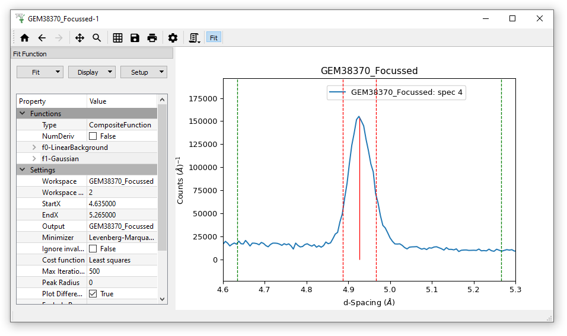
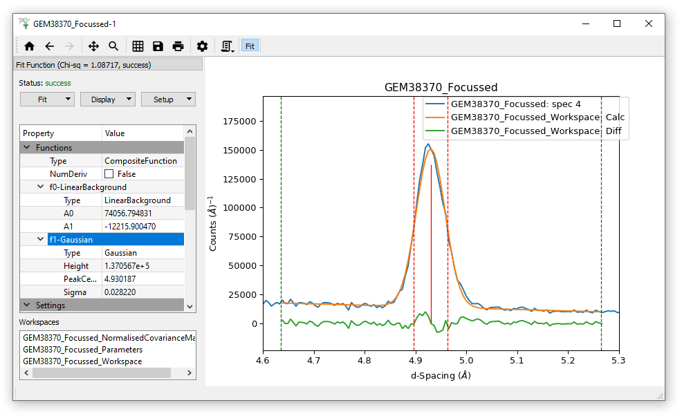
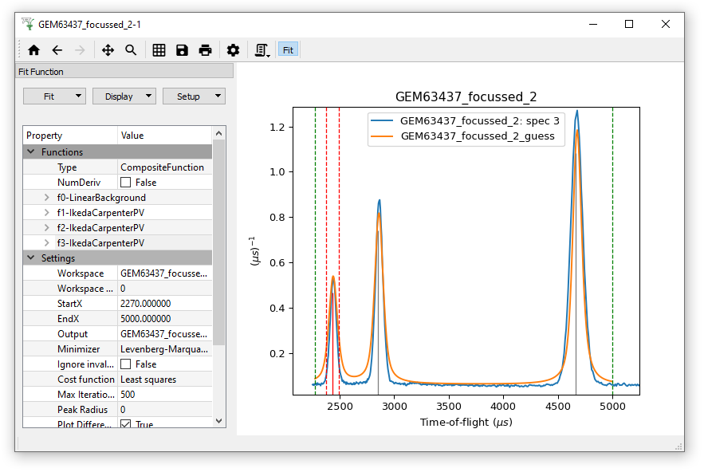
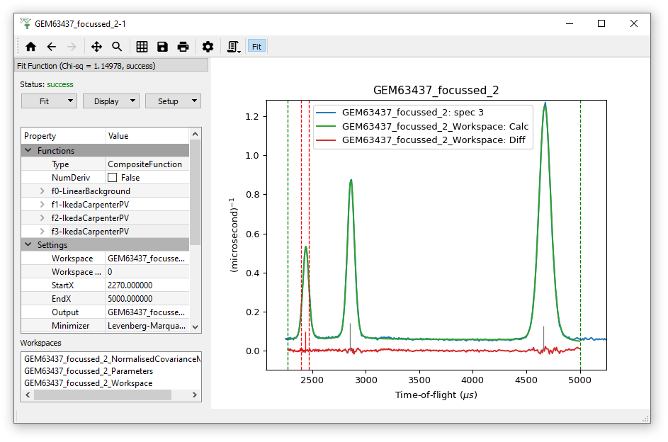
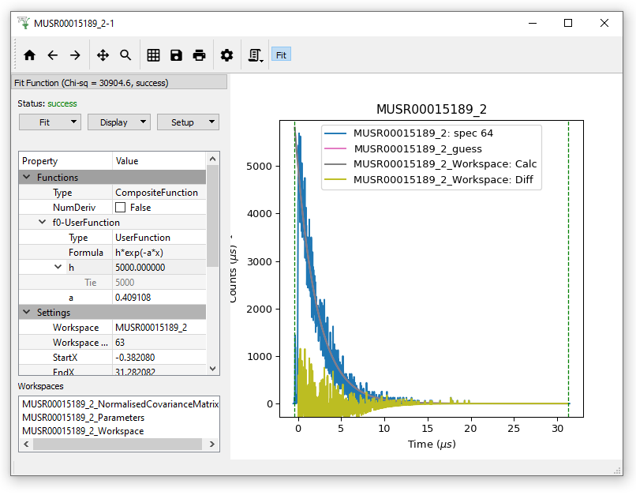

Exercises#
Exercise 1#
In this exercise we will fit a simple Gaussian on a linear background.
Start with loading the data set (GEM38370_Focussed).
Plot Spectrum number 4.
Zoom into the peak around 5 angstroms.
{kind=link}
Click on the Fit Toolbar button to open the fit property browser.
Adjust the fitting range, defined by the dashed lines, if needed.
Make sure the fitting model is empty, Clear the model if necessary.
{kind=link}
Add a background function. Select LinearBackground.
{kind=link}
Change peak type to Gaussian, and add a Gaussian.
Click at peak’s maximum point to set initial values for the centre and the height.
Adjust the width.

Run Fit.

Exercise 2#
Again, ensure that the Fit model is clear by clicking Setup >”Clear model”
Load the GEM63437_focussed.nxs data (different to the data in Exercise 1). Note the workspace created is a WorkspaceGroup, which has already been processed with Mantid. Click on the triangle to reveal the contained workspaces. Show the History to see how many algorithms have been applied to this dataset.
Plot the spectrum in GEM63437_focussed_2 by double-clicking on this workspace, and zoom in on the area of the three peaks
Open the Fit Property Browser and set fitting range/StartX and EndX to be between approximately 2270 and 5000 microseconds
Right click on plot and select “Add background”, then LinearBackground
Change the peak type to IkedaCarpenterPV.
Remember, this is a peak function where some parameters are set based on the relevant instrument geometry. This is evident from the starting guess of the peak width but also by inspecting this function in the Fit Function panel.
Add an IkedaCarpenterPV peak to each of the three peaks, remembering to change the peak width (at least for the first one!)
Display > “Plot guess” and what you should see is something similar to

where the orange line is the guess
Remove plot guess
Fit the data with the model, where the output should be something similar to:

where the green line here is the Calculated fit
Optionally using a similar approach try to fit the spectrum in for example GEM63437_focussed_3
Exercise 3#
Load the MUSR00015189 data set, this is a group workspace
Click the triangle beside this workspace
From the second workspace (MUSR00015189_2), plot spectrum number 64
Open the Fit property browser
As described earlier, add a UserFunction with the with Formula = h*exp(-a*x)
Set h = 5000 and Fix it to this value
Give a some positive intial value such as 1.0
Fit the data
